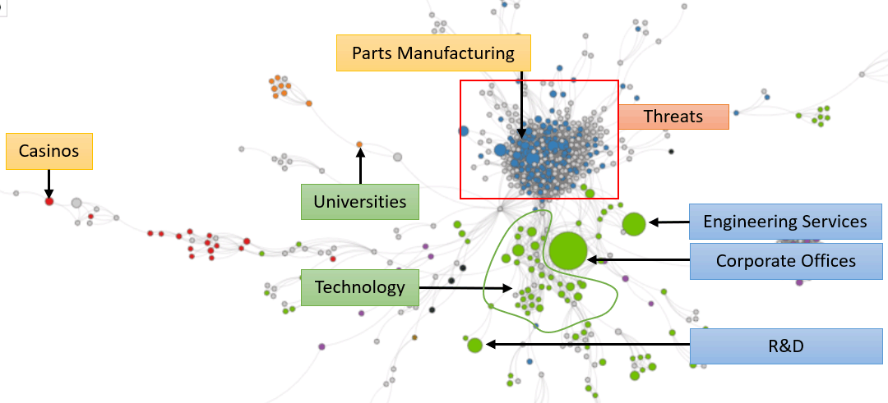

Detroit has a large economy that has rebounded from losses in manufacturing, while maintaining its corporate activities.
Our analysis shows:
- Strengths in Engineering Services, Corporate Offices, and R&D
- Weaknesses in Casinos and Parts Manufacturing
- Opportunities in Education and Technology
- Threats in Manufacturing
We think about economies as the collection of problems that a region solves. Looking at Detroit’s industries, we see
the corporate activity that used to be linked to manufacturing jobs. In the past, its blue manufacturing circles might
have been similar in size as its green services circles. When manufacturing shrank, the negative consequences reverberated
through the economy. Now, Detroit needs to expand its remaining activity and find new problems it can solve related
to those activities.
When we organize the industries based on their similarity to each other, we get a clearer picture of how the industries
relate to each other. We see the close link between its blue manufacturing activities, and its green corporate offices
and engineering services. We some scattered activity in other parts of the network, but none very large.
How Detroit's industries relate to each other
A network map that positions industries and clusters based on similarity
(Note: Gray circles mean that the region has little/no activity in that industry)

The graph on the left shows the trends from above. Detroit’s Strengths come from large industries projected to continue
growing. Weaknesses come from a loss of the small activity in hospitality due to casinos, and from continued losses
in parts manufacturing. The city has two major Opportunities that would be related, despite some distance between them
on the graph. Detroit needs to expand in the technology industries that surround its corporate activity, possibly through
automated vehicles and transport technology. Its Opportunity in Universities/Education would be a crucial partner in
such initiatives. Finally, Detroit’s manufacturing industries continue to face Threats due to automation, relocation
within the United States, and international trade. Also, if Detroit does not build human capital to expand into transport
technology, it faces the Threat of tech companies in other areas claiming that space.
Detroit might also want to see the publicly available analysis from above for neighboring cities such as Pittsburgh and
Cleveland, or for similar cities with tech industries it might want to imitate.
We use this analysis to help create FOCUS for cities. Once a city like Detroit understands what’s possible, probable,
and optimal, it can create a strategy that builds around its strengths, resolves its weaknesses, unlocks its opportunities,
and hedges against its threats.
Click here to view data for another city, or click
Graphs above to see the data that supports this analysis. If you would like to learn more, please
contact us.